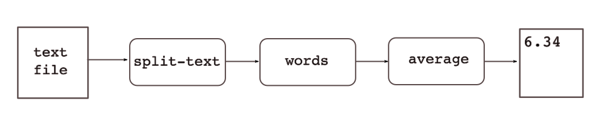

This page describes the set up of a simple project, step by step.
All required tools and files are available in the Genet distribution,
in directory
The example project, called "genet-example", defines three tools:
These tools can be used together to compute the average length of words in texts (do not forget this is for an example project, for a pedagogical purpose):
We will show how to use Genet to set up a continuous integration environment for our project.
The
The first thing to do is create the database. Here we use
a MySQL database called
Then we have to create the directory of our project, in
The initialization of the directory creates a default
Next we initialize the database tables:
For the next operations, we change to the project directory, so that
we do not have to use the
At this point, you can launch the web server to browse your project. Just run
and visit
Then, we have to define filetypes, to represent the types of files read and produced by our project's tools. Each filetype has an id, a file extension and a description.Here, we have three filetypes:
The following commands will create the filetypes:
We can use the
The next step is to define our three tools in our project. The term "tool" must be taken in the broad sense: it can be an executable or a whole software, project or package providing various tools (executables). For each tool, we can define branches, versions and interfaces. Interfaces are commands associated to a tool, a specific branch or a specific version. Interfaces are used to represent:
Each interface has a command-line attached. This command will be run when executing
a chain where this interface appears (see below). In the provided command line,
For our example project, we'll act like if our three tools are developped separately, and so their version numbers are independent. Each of our tools is composed of only one executable.
To install the tools, go to the
This will install tools in the
We start by defining our
We then add a
In this branch, we define a
Then, we define a new interface, associated to the tool, which means this interface
will be supported by all versions of the tool. We could have defined the interface
only for a branch; in this case, all the versions "under" the branch would have
offered the interface. We could also associate an interface to a specific version.
Note here the
Next, we add two ports to this interface, one for input and one for output. Each port has an associated type, so that some controls will be done when defining treatment chains.
Let's add an input port ("in") for our interface, by giving a filetype id ("text"):
Then we add an output port ("out"), with another filetype id ("words").
When the command associated to the interface will be run, it will be given, in this order, the list of input arguments (files and/or directories) and the list of output arguments (files and/or directories). Here our interface command will take two parameters: an input file and an output file.
We can list the available interfaces with the following command. By now, this will list the only interface we defined at this point:
We define the "words" tool the same way as above, except that some commands below use the output of previous commands to avoid typing the urls of created items:
Then, we do the same to define the "average" tool with one interface:
The next step is to define a chain, that is a data flow composed of interfaces, whose input will be a test case (see below). For our project, we will define one chain using our three tools.
A chain is defined in a chain module; a chain module is defined in a
Here we define a
Revisions of chains are handled with git. So we add our chain file to git:
We can check our chain by visiting its url
An input is a set of data and a list of chains to apply to the data. A pair (data, chain) can be considered as a test case.
Now we will define such an input. The data will be a simple text file.
The chain to apply will be
Inputs are placed in
Let's create a
Then, let's copy a text file, for example
this one. Next, we create
the
Revisions of inputs are also handled by git, so we add these two files to git:
Before being able to apply a chain on an input, the chain must be flattened. Indeed, each chain operation can refer to an interface (as in our example) or another chain. So we need to flatten the chain to have only reference to interfaces. Moreover, flattening the chain will give us a stable reference to chain, associated to the git ids of the source chains it was built from.
To flatten our
Now that we have defined an input and flattened the chain it refers to, we can execute this flattened chain to obtained instanciated chains.
Each flattened chain can give various instanciated chains. Each instanciated chain corresponds to a combination of versions of the tools used in the chain. So, if a chain uses interfaces from two different tools, T1 and T2, with T1 having three versions and T2 two versions, then 3 x 2 instanciated chains are possible.
By now, we have only one version per tool, so we will get only one instanciation
chain, by running the following command. We indicate to execute chains on
the
The flattened chain executed is the last chain flattened from the chain specified
in the input. The instanciated chain can be browsed using the form at
If we're satisfied with the result of the execution, we can set this instanciated chain as a reference for this input and this source chain:
Now suppose we developped and installed a new version of the "words" tool, version 0.4,
which lowercases all words. We want to re-run our
First, we add this new version:
Since this version is under the 0.x branch, it means that the
Then, we can compare this new instanciated chain with the reference instanciated chain:
The web interface provides a form to compare two executions:
The
The default diff command used to compare execution results can be specified in two ways.
First, one can use the
Another way is to define a diff command associated to a name, using the following command:
Then, the name
Note that the web interface does not allow using arbitrary diff command, for security reasons.
Only predefined diff commands added with
Now suppose we developped and installed a new version of our "average" tool, which removes the extrema values before computing the average.
Let's add this new version:
Now, if we ask for execution of chains for the
With time, the number of tool versions will increase, and so the number of combinations of versions used to execute chains. If a new version of each tool is added each night to perform tests with last changes, this can lead to a lot of executions stored in database, most of them not being relevant.
To prevent this problem, a tool version can be flagged as active or not.
By default, it is active, i.e. it is used when computing the various tool
version combinations to use. A command allows to set a version as inactive,
for example here we set version 0.2 of
If we have scripts adding new versions each night to run our tests, we can use the following algorithm in these scripts:
The various